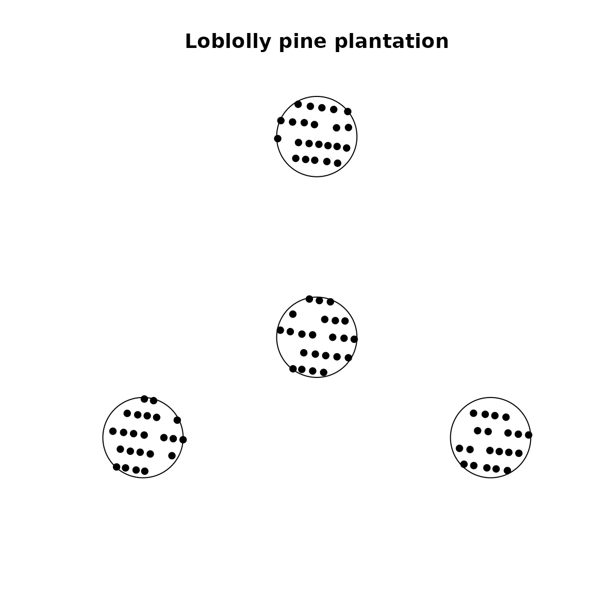
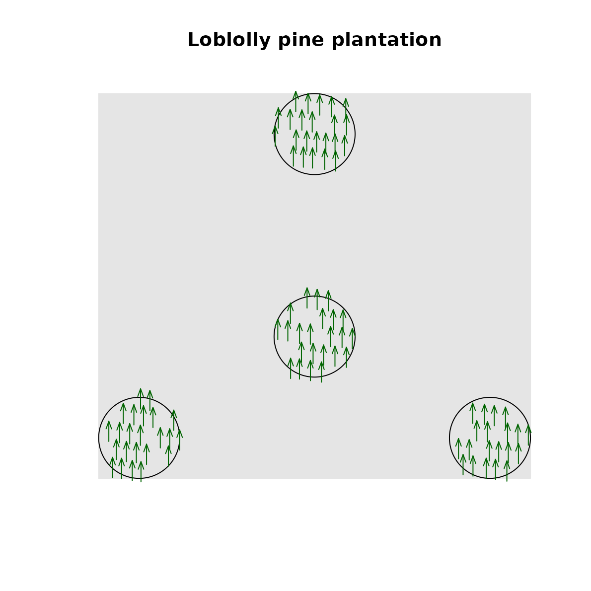

Analyze tree spatial pattern on FIA plots
spatstat_helpers.RdFunctions that facilitate point pattern analysis of FIA tree data using the spatstat library.
Usage
create_fia_owin(linear_unit = "ft", macroplot = FALSE, npoly = 360)
create_fia_ppp(
tree_list,
live_trees = TRUE,
min_dia = 5,
linear_unit = "ft",
macroplot = FALSE,
window = NULL,
mark_cols = NULL,
mark_as_factor = NULL
)Arguments
- linear_unit
An optional character string specifying the linear distance unit. Defaults to the native FIA unit of
"ft", but may be set to"m"instead (or"meter"/"metre").- macroplot
An optional logical value. The default is
FALSE, which defines the FIA plot footprint in terms of the standard four-subplot configuration with subplot radius of 24 ft (7.3152 m). By default, "macroplot trees" havingDISToutside the subplot boundary are not included. This argument may be set toTRUEin which case the observation window will be defined using the FIA optional "macroplot" configuration instead (58.9 ft or 18.227 m radius, used only in certain areas of the Pacific Northwest FIA region).- npoly
Integer value giving the number of edges to use for polygon approximation. Defaults to
360.- tree_list
A data frame containing a set of tree records for one FIA plot (see Details).
- live_trees
A logical value,
TRUEto include live trees only (the default, i.e.,STATUSCD == 1).- min_dia
A numeric value specifying the minimum diameter threshold for included trees. The default is
5.0. Trees less than 5-in. diameter but greater than or equal to 1.0-in. diameter, denoted as "saplings", are only recorded in FIA microplots so cannot be stem-mapped across the full 4-subplot footprint.- window
An optional object of class
"owin"defining the observation window of an FIA plot in the 2-D plane. Defaults tocreate_fia_owin(linear_unit, macroplot).- mark_cols
An optional character vector of column names in
tree_listto designate as spatstatmarkswhich carry additional information for each data point in a point pattern object.- mark_as_factor
An optional subset of
mark_colsto be treated asfactormarks. If not alreadyfactor, these will be coerced as such upon input.factormarks are those that take only a finite number of possible values (e.g. colors or types).
Details
create_fia_owin() returns an object of class "owin" from the
spatstat library. This object represents the generic 2-D observation
window for the nationally standard FIA plot design which is a four-point
cluster of subplots. Used when creating a spatstat point pattern object
for an FIA tree list.
create_fia_ppp() returns an object of class "ppp" representing the point
pattern of an FIA tree list in the 2-D plane. A point pattern object defines
the dataset for using a stem-mapped FIA plot with functions of the
spatstat library.
The standard set of columns for tree list data in FIAstemmap is given
below, along with the status of each column as required or optional for
create_fia_ppp():
PLT_CN: optional,create_fia_ppp()assumes input is for one plotSUBP: required subplot numberTREE: required tree number within a subplotAZIMUTH: required horizontal angle from subplot centerDIST: required distance from subplot centerSTATUSCD: required tree status code (1 = live, 2 = dead)SPCD: optional FIA species codeSPGRPCD: optional FIA species group codeDIA: optional tree diameterHT: optional tree heightACTUALHT: optional tree actual height (accounts for broken top)CCLCD: optional crown class codeTPA_UNADJ: optional tree expansion factor (per acre)CRWIDTH: optional crown width (may be computed with TODO)
Examples
# observation window for the standard FIA plot design
w <- create_fia_owin()
summary(w)
#> Window: polygonal boundary
#> 4 separate polygons (no holes)
#> vertices area relative.area
#> polygon 1 360 1809.62 0.25
#> polygon 2 360 1809.62 0.25
#> polygon 3 360 1809.62 0.25
#> polygon 4 360 1809.62 0.25
#> enclosing rectangle: [-127.921, 127.921] x [-84.001, 144.001] feet
#> (255.8 x 228 feet)
#> Window area = 7238.47 square feet
#> Unit of length: 1 foot
#> Fraction of frame area: 0.124
# or using metric units
w <- create_fia_owin("m")
summary(w)
#> Window: polygonal boundary
#> 4 separate polygons (no holes)
#> vertices area relative.area
#> polygon 1 360 168.119 0.25
#> polygon 2 360 168.119 0.25
#> polygon 3 360 168.119 0.25
#> polygon 4 360 168.119 0.25
#> enclosing rectangle: [-38.99032, 38.99032] x [-25.6035, 43.8915] meters
#> (77.98 x 69.5 meters)
#> Window area = 672.475 square meters
#> Unit of length: 1 meter
#> Fraction of frame area: 0.124
plot(w, main = "FIA standard four-subplot design")
# point pattern object for the plantation example data
X <- create_fia_ppp(plantation)
summary(X)
#> Planar point pattern: 89 points
#> Average intensity 0.01229542 points per square foot
#>
#> Coordinates are given to 16 decimal places
#>
#> Window: polygonal boundary
#> 4 separate polygons (no holes)
#> vertices area relative.area
#> polygon 1 360 1809.62 0.25
#> polygon 2 360 1809.62 0.25
#> polygon 3 360 1809.62 0.25
#> polygon 4 360 1809.62 0.25
#> enclosing rectangle: [-127.921, 127.921] x [-84.001, 144.001] feet
#> (255.8 x 228 feet)
#> Window area = 7238.47 square feet
#> Unit of length: 1 foot
#> Fraction of frame area: 0.124
plot(X, pch = 16, main = "Loblolly pine plantation")

# plot trees as trees :)
X <- create_fia_ppp(plantation, mark_cols = "SPCD")
plot(X, main = "Loblolly pine plantation",
shape = "arrows", direction = 90, size = 12, cols = "darkgreen",
background = "gray90", legend = FALSE)

# Ripley's K-function
K <- spatstat.explore::Kest(X, rmax = 12)
plot(K, main = "Ripley's K-function for the plantation trees")